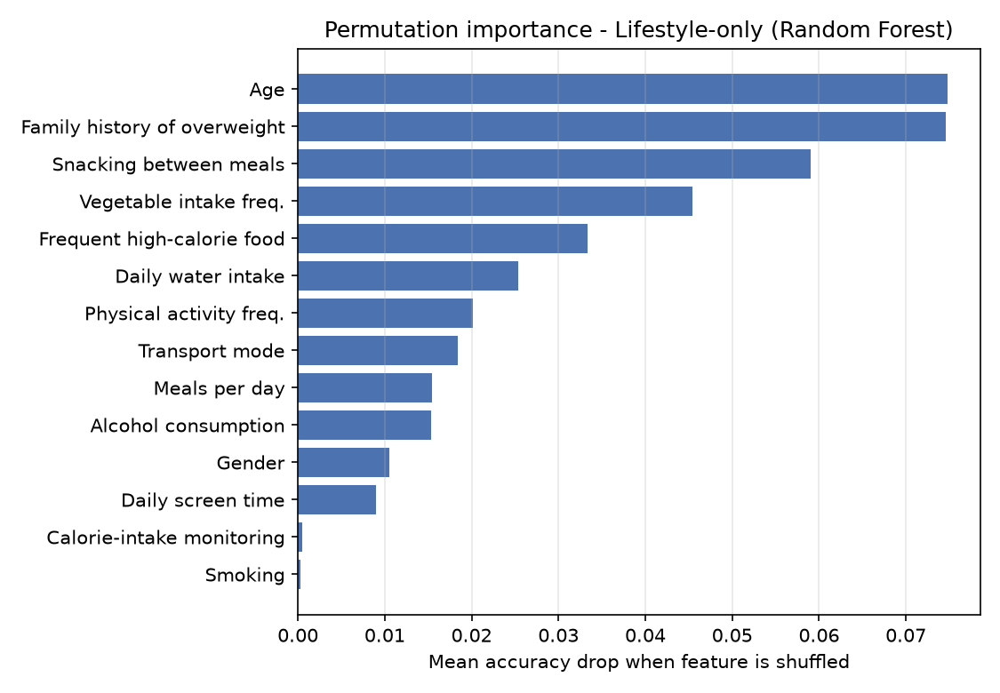
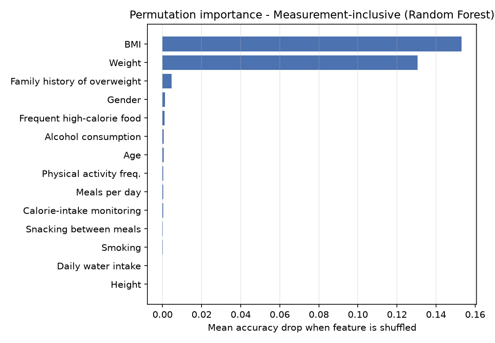
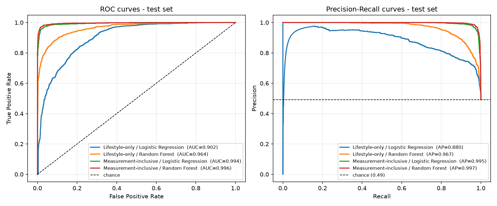

Lifestyle-Based Obesity Screening · 实验报告
课程项目 · 吴炳言 / 杨皓童 / 杜沛霖 · 2026-10-25 · 数据：Kaggle Obesity Risk（Heywhale 分发）
任务定位（答辩第一句话）：这是一个基于生活方式特征的当前肥胖状态筛查工具，
不是医疗诊断，也不是未来肥胖风险预测 —— 标签来自 BMI 分段，这一点在两套特征对比中得到了直接验证。
一、数据核查结论
- 20,758 行 × 18 列，零缺失、零重复（按 id 外全部特征判重），数值范围无异常（Age 14–61，Height 1.45–1.98m，Weight 39–165kg）。
- 发现并修复三处数据问题：目标列名
0be1dad → NObeyesdad；标签 0rmal_Weight → Normal_Weight；CAEC/CALC 中的 0 恢复为 "no"。
- 二分类标签几乎完美平衡：肥胖 10,204（49.2%）vs 非肥胖 10,554（50.8%）。
- 关键证据：各类 BMI 均值严格单调 —— 偏瘦 17.6 → 正常 22.0 → 超重I 26.1 → 超重II 28.2 → 肥胖I 32.2 → 肥胖II 36.5 → 肥胖III 41.8。
标签本质上由 BMI 定义，因此「不含身高体重」的模型对比不是可选项，而是防止误导性结论的必要实验。
- 划分：按 7 类分层 70/15/15（seed=42），三份的肥胖率分别为 49.16% / 49.13% / 49.17%。
二、测试集最终结果（仅评估一次）
0.964
生活方式模型 ROC-AUC（Random Forest）
0.996
含测量值模型 ROC-AUC（Random Forest）
| 特征集 | 模型 | Accuracy | Precision | Recall | F1 | ROC-AUC | PR-AUC |
|---|
| 仅生活方式 | 多数类基线 | 0.508 | 0.000 | 0.000 | 0.000 | 0.500 | 0.492 |
| 仅生活方式 | Logistic Regression | 0.802 | 0.730 | 0.946 | 0.824 | 0.902 | 0.880 |
| 仅生活方式 | Random Forest | 0.897 | 0.904 | 0.884 | 0.894 | 0.964 | 0.967 |
| 含测量值 | Logistic Regression | 0.968 | 0.969 | 0.965 | 0.967 | 0.994 | 0.995 |
| 含测量值 | Random Forest | 0.977 | 0.982 | 0.971 | 0.976 | 0.996 | 0.997 |
Precision / Recall / F1 均针对肥胖类（Obesity I–III），阈值在验证集上按 F1 最优选取（lifestyle=0.50，measurement=0.54）。
三、扩展：七类细分（Random Forest）
仅生活方式 0.727 · 含测量值 0.900（测试集 accuracy）。答辩可表述为：纯生活方式特征能把人分到正确的肥胖等级的比例约为 73%，作为筛查参考已相当可观。
四、特征重要性（排列重要性，测试集）
仅生活方式模型

前五：Age、家族超重史、两餐间加餐（CAEC）、蔬菜摄入频率（FCVC）、高热量食物（FAVC）。吸烟与热量监测的贡献约为 0。
含测量值模型

BMI（0.153）+ 体重（0.131）碾压其余所有特征 —— 第三名家族史只有 0.005，相差约 30 倍。
答辩金句：含测量值模型本质上只是在「读 BMI」，生活方式信息几乎没有被使用；
所以真正值得解释的模型是左边的那个 —— 它证明不量身高体重、只靠问卷，也能做到 AUC 0.96 的筛查能力。
（所有重要性均为预测关联，不是因果。）
五、混淆矩阵与曲线
ROC / PR 曲线（测试集）
六、可复现步骤
python -m venv .venv && .venv\Scripts\activate
pip install -r requirements.txt
python src/prepare_data.py # 清洗 + 标签修复 + 分层拆分（不读测试集之外的信息）
python src/train.py # 训练集拟合、验证集调参选阈值（物理上不读测试集）
python src/evaluate.py # 测试集只在这一步被读取一次，产出全部指标和图
streamlit run app.py # 问卷式演示（虚构示例，非诊断）
七、局限（答辩必备）
- 标签是 BMI 分段的产物（数据含合成增强成分），「肥胖」在这里是 BMI 类别而非临床评估。
- 「当前状态分类」≠「未来风险预测」，不能外推为纵向预测。
- 尚未做性别/年龄分组的公平性分析（可作为后续工作）。